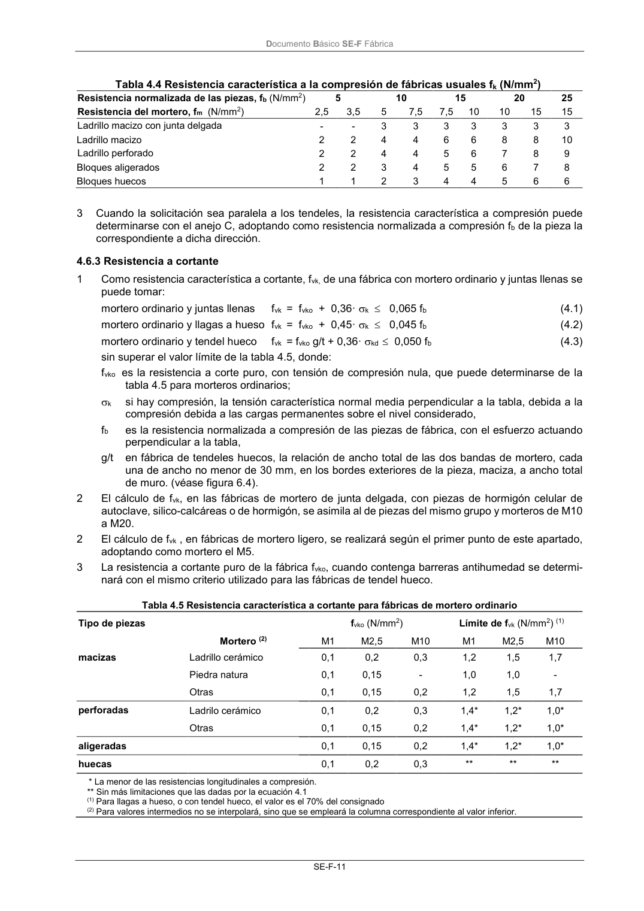

DB-SE-F · 4.6.3 Resistencia a cortante · versión 2019-12-20
SHA256: e3e0805c3b4c307519c26dc34c3fdbf143d842edd013c91b0f52d2c73403d91c · página física 15 de 70 · métodos de encabezado
solo si están cotejados.
Formatos: Markdown · JSON de bloques · PDF p. 15 · imagen PNG
Documento Básico SE-F Fábrica SE-F-11 Tabla 4.4 Resistencia característica a la compresión de fábricas usuales fk (N/mm2) Resistencia normalizada de las piezas, fb (N/mm2) 5 10 15 20 25 Resistencia del mortero, fm (N/mm2) 2,5 3,5 5 7,5 7,5 10 10 15 15 Ladrillo macizo con junta delgada - - 3 3 3 3 3 3 3 Ladrillo macizo 2 2 4 4 6 6 8 8 10 Ladrillo perforado 2 2 4 4 5 6 7 8 9 Bloques aligerados 2 2 3 4 5 5 6 7 8 Bloques huecos 1 1 2 3 4 4 5 6 6 3 Cuando la solicitación sea paralela a los tendeles, la resistencia característica a compresión puede determinarse con el anejo C, adoptando como resistencia normalizada a compresión fb de la pieza la correspondiente a dicha dirección. 4.6.3 Resistencia a cortante 1 Como resistencia característica a cortante, fvk, de una fábrica con mortero ordinario y juntas llenas se puede tomar: mortero ordinario y juntas llenas fvk = fvko + 0,36· k 0,065 fb (4.1) mortero ordinario y llagas a hueso fvk = fvko + 0,45· k 0,045 fb (4.2) mortero ordinario y tendel hueco fvk = fvko g/t + 0,36· kd 0,050 fb (4.3) sin superar el valor límite de la tabla 4.5, donde: fvko es la resistencia a corte puro, con tensión de compresión nula, que puede determinarse de la tabla 4.5 para morteros ordinarios; k si hay compresión, la tensión característica normal media perpendicular a la tabla, debida a la compresión debida a las cargas permanentes sobre el nivel considerado, fb es la resistencia normalizada a compresión de las piezas de fábrica, con el esfuerzo actuando perpendicular a la tabla, g/t en fábrica de tendeles huecos, la relación de ancho total de las dos bandas de mortero, cada una de ancho no menor de 30 mm, en los bordes exteriores de la pieza, maciza, a ancho total de muro. (véase figura 6.4). 2 El cálculo de fvk, en las fábricas de mortero de junta delgada, con piezas de hormigón celular de autoclave, silico-calcáreas o de hormigón, se asimila al de piezas del mismo grupo y morteros de M10 a M20. 2 El cálculo de fvk , en fábricas de mortero ligero, se realizará según el primer punto de este apartado, adoptando como mortero el M5. 3 La resistencia a cortante puro de la fábrica fvko, cuando contenga barreras antihumedad se determi- nará con el mismo criterio utilizado para las fábricas de tendel hueco. Tabla 4.5 Resistencia característica a cortante para fábricas de mortero ordinario Tipo de piezas fvko (N/mm2) Límite de fvk (N/mm2) (1) Mortero (2) M1 M2,5 M10 M1 M2,5 M10 macizas Ladrillo cerámico 0,1 0,2 0,3 1,2 1,5 1,7 Piedra natura 0,1 0,15 - 1,0 1,0 - Otras 0,1 0,15 0,2 1,2 1,5 1,7 perforadas Ladrilo cerámico 0,1 0,2 0,3 1,4* 1,2* 1,0* Otras 0,1 0,15 0,2 1,4* 1,2* 1,0* aligeradas 0,1 0,15 0,2 1,4* 1,2* 1,0* huecas 0,1 0,2 0,3 ** ** ** * La menor de las resistencias longitudinales a compresión. ** Sin más limitaciones que las dadas por la ecuación 4.1 (1) Para llagas a hueso, o con tendel hueco, el valor es el 70% del consignado (2) Para valores intermedios no se interpolará, sino que se empleará la columna correspondiente al valor inferior.
